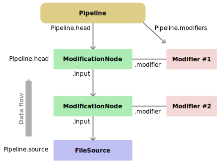

ovito.pipeline
This module contains classes that are part of OVITO’s data pipeline system.
Pipelines:
Pipeline- a sequence of data input and processing steps (a data source followed by modifiers)
Modifier- base class of all built-in data modification and processing algorithms of OVITO
ModifierInterface- abstract base class for user-defined modifiers
PipelineNode- base class for all types of pipeline steps
ModificationNode- a pipeline step that processes some input data by applying a given modifier algorithm
Pipeline data sources:
FileSource- loads input data from an external file
StaticSource- passes an existingDataCollectionobject to the pipeline as input
PythonSource- encapsulates aPipelineSourceInterfaceor user-defined pipeline source function
PipelineSourceInterface- abstract base class for user-defined dynamic data sources
- class ovito.pipeline.FileSource
Base:
ovito.pipeline.PipelineNodeThis object type serves as a
Pipeline.sourceand takes care of reading the input data for aPipelinefrom an external file.You normally do not need to create an instance of this class yourself; the
import_file()function does it for you and wires the fully configuredFileSourceto the newPipeline. However, if needed, theFileSource.load()method allows you to load a different input file later on and replace the input of the existing pipeline with a new dataset:from ovito.io import import_file # Create a new pipeline with a FileSource: pipeline = import_file('input/first_file.dump') # Get the data from the first file: data1 = pipeline.compute() # Use FileSource.load() method to replace the pipeline's input with a different file pipeline.source.load('input/second_file.dump') # Now the pipeline gets its input data from the new file: data2 = pipeline.compute()
Furthermore, you will encounter other
FileSourceobjects in conjunction with certain modifiers that need secondary input data from a separate file. TheCalculateDisplacementsModifier, for example, manages its ownFileSourcefor loading reference particle positions from a separate input file. Another example is theLoadTrajectoryModifier, which employs its own separateFileSourceinstance to load the particle trajectories from disk and combine them with the topology data previously loaded by the mainFileSourceof the data pipeline.Data access
A
FileSourceis aPipelineNode, which provides acompute()method returning a copy of the data loaded from the external input file(s). Thecompute()method loads the data of a specific trajectory frame from the input file(s) and returns it as aDataCollectionobject:# This creates a new Pipeline with an attached FileSource. pipeline = import_file('input/simulation.dump') # Request data of trajectory frame 0 from the FileSource. data = pipeline.source.compute(0) print(data.particles.positions[...])
To modify or amend the
DataCollectionloaded by theFileSource, you have to insert a user-defined modifier function into the pipeline. A typical use case is assigning the radii and names to particle types loaded from a simulation file that doesn’t contain named atom types:pipeline = import_file('input/simulation.dump') # User-defined modifier function that assigns names and radii to numeric atom types: def setup_atom_types(frame, data): types = data.particles_.particle_types_ types.type_by_id_(1).name = "Cu" types.type_by_id_(1).radius = 1.35 types.type_by_id_(2).name = "Zr" types.type_by_id_(2).radius = 1.55 pipeline.modifiers.append(setup_atom_types)
- property data
This field provides access to the internal
DataCollectionmanaged by the file source, which stores a master copy of the data loaded from the input file (only the most recently loaded trajectory frame).Caution
This data collection should be considered read-only, because any changes you make to its contents may be overwritten the next time the
FileSourcereads a trajectory frame from the input file. If you want to alter the data loaded by theFileSourcein some way, in particular if you want to do it for every frame of a trajectory, consider inserting a custom Python modifier function at the beginning of thePipelinethat makes the desired changes.
- load(location, **params)
Sets a new input file, from which this pipeline source will retrieve its data.
The function accepts additional keyword arguments, which are forwarded to the format-specific file reader managed internally by the
FileSource. For further information, please see the documentation of theimport_file()function, which has the same call interface as this method.- Parameters:
location (str|os.PathLike|Sequence[str]) – The local file(s) or remote URL to load.
params – Additional keyword parameters to be passed to the file reader.
- class ovito.pipeline.ModificationNode
Base:
ovito.pipeline.PipelineNodeNew in version 3.10.0.
Represents a modification step in a data processing pipeline, i.e, the application of a
Modifierin a particularPipeline.Each
ModificationNodehas aninputproperty, which is a reference to its preceding node in the upstream pipeline, where receives its input data from. Since eachModificationNodeis associated with exactly oneinputnode, they form a singly-linked list structure. The pipeline chain always terminates in a sourcePipelineNode, i.e., a node that is not aModificationNodeand doesn’t have another input node.A
ModificationNodealways has amodifierfield, which is a reference to aModifierobject implementing the actual data processing algorithm that gets executed during pipeline evaluation. The modifier is also the object that stores the specific control parameters of the data processing step. TheModificationNodeitself simply represents the use of a modifier in a particular data pipeline.Note
The
ModificationNodeclass is not meant to be instantiated directly. Instead, you can append aModifierobject to a pipeline’sPipeline.modifiersvirtual list, which will implicitly create a newModificationNodeand make that node the pipeline’s newhead:modifier = ColorCodingModifier() pipeline.modifiers.append(modifier) assert pipeline.head.modifier is modifier assert modifier.get_modification_nodes()[0] is pipeline.head
- property input
Reference to the upstream
PipelineNodethat provides the input data for this modification step in the pipeline. Several modification nodes, each located in a different pipeline, may share the same input node, which means it is possible to build branched pipelines that are fed by the same data source.See also
- property modifier
Reference to the
Modifierthat gets applied to the data as it flows through the pipeline. SeveralModificationNodesmay share the same modifier object, which allows using (applying) the same modifier in multiple pipelines. All uses of the modifier share the same parametrization in this case.
{kind=link}
- class ovito.pipeline.Modifier
Base class for all data modification and processing algorithms in OVITO. See the
ovito.modifiersmodule for a list of all concrete modifier types that can be inserted into a data processingPipeline.- property enabled
Controls whether the modifier will be applied to the data or not. Disabled modifiers are skipped during evaluation of a data pipeline.
- Default:
True
- get_modification_nodes()
Returns a list of all
ModificationNodescurrently associated with this modifier, i.e., whosemodifierfield points to this modifier. EachModificationNodein the returned list represents the use or application of this modifier in a particular data pipeline.New in version 3.10.0.
- property title
A human-readable name for the modifier to be displayed in the pipeline editor of the OVITO desktop application. If left unspecified (empty string), the display title is automatically determined by OVITO based on the modifier’s concrete class type.
- Default:
''
New in version 3.9.1.
- class ovito.pipeline.ModifierInterface
Base:
traits.has_traits.HasTraitsNew in version 3.8.0.
Abstract base class for Python-based modifiers that follow the advanced programming interface.
- class InputSlot
Represents the upstream pipeline generating the input data for a custom modifier implementation.
- compute(frame)
Computes the results of the upstream pipeline connected to this input slot.
frame specifies the trajectory frame to retrieve, which must be in the range 0 to (
num_frames-1).The slot uses a caching mechanism to keep the data for one or more frames in memory. Thus, invoking
compute()repeatedly to retrieve the same frame will typically be very fast.- Parameters:
frame (int) – The trajectory frame to retrieve from the upstream pipeline.
- Return type:
- property input_node: PipelineNode
The
PipelineNodethat forms outlet of the (upstream) pipeline connected to this modifier input slot.New in version 3.10.0.
- property num_frames: int
The number of trajectory frames that the upstream pipeline connected to this input slot can produce. This field’s value is the same as
input_node.num_frames.
- abstract compute_trajectory_length(*, input_slots, data_cache, pipeline_node, **kwargs)
A modifier that would like to control the number of trajectory frames shown in the timeline of OVITO should implement this method to communicate the number of frames it is able to compute. For example, your modifier could take a static configuration as input (a single frame) and produce multiple output frames from it by synthesizing a trajectory. OVITO’s
LoadTrajectoryModifierandSmoothTrajectoryModifierare examples for modifiers offering this special capability.- Parameters:
input_slots (Dict[str, InputSlot]) – One or more
InputSlotobjects representing the upstream data pipeline(s) connected to this modifier.data_cache (DataCollection) – A data container (initially empty) which may be used by the modifier function to store intermediate results.
pipeline_node (ovito.pipeline.ModificationNode) – An object representing the use of this modifier in the pipeline whose trajectory length is being computed.
kwargs (Any) – Any other arguments that may be passed in by the pipeline system.
- Returns:
The number of animation frames this modifier can generate.
- Return type:
An implementation of
compute_trajectory_length()must return a positive integer. The value will serve as new timeline length, which will be used by OVITO for animation rendering and such. The pipeline system will invoke your modifier’smodify()method with frame parameter values ranging from 0 to the new trajectory length minus 1, and any subsequent modifiers in the downstream pipeline will see the new trajectory length.If you do not implement the
compute_trajectory_length()method, the pipeline system will assume that the number of output frames of the modifier is equal to the number of input trajectory frames coming from the upstream pipeline.Examples:
This modifier filters out every other frame of the input trajectory:
from ovito.data import DataCollection from ovito.pipeline import ModifierInterface class SkipFramesModifier(ModifierInterface): def compute_trajectory_length(self, *, input_slots: dict[str, ModifierInterface.InputSlot], **kwargs): # Let the output trajectory length be half of the input trajectory length. return input_slots['upstream'].num_frames // 2 def modify(self, data: DataCollection, *, frame: int, input_slots: dict[str, ModifierInterface.InputSlot], **kwargs): # Pass only every other frame of the input trajectory down the pipeline. data.objects = input_slots['upstream'].compute(frame * 2).objects
The following modifier takes a static configuration as input and synthesizes animation frames to produce a turntable animation (similar to this tutorial). The length of the animation is controlled by the adjustable modifier parameter duration. We must call
notify_trajectory_length_changed()whenever the value of this parameter changes, because it means the return value ofcompute_trajectory_length()changes too.from ovito.data import DataCollection from ovito.modifiers import AffineTransformationModifier from ovito.pipeline import ModifierInterface from traits.api import Range, observe import numpy as np class TurntableAnimation(ModifierInterface): # Parameter controlling the animation length (value can be changed by the user): duration = Range(low=1, value=100) def compute_trajectory_length(self, **kwargs): return self.duration def modify(self, data: DataCollection, *, frame: int, **kwargs): # Apply a rotational transformation to the whole dataset with a time-dependent angle of rotation: theta = np.deg2rad(frame * 360 / self.duration) tm = [[np.cos(theta), -np.sin(theta), 0, 0], [np.sin(theta), np.cos(theta), 0, 0], [ 0, 0, 1, 0]] data.apply(AffineTransformationModifier(transformation=tm)) # This is needed to notify the pipeline system whenever the animation length is changed by the user: @observe("duration") def anim_duration_changed(self, event): self.notify_trajectory_length_changed()
New in version 3.9.1.
- abstract input_caching_hints(frame, *, input_slots, pipeline_node, **kwargs)
User-defined modifiers that access multiple trajectory frames in their
modify()method should implement this method to communicate the list of frames going to be needed. The pipeline system will keep the data of these trajectory frames in an internal cache to avoid unnecessary I/O and compute operations. See Input data caching.- Parameters:
frame (int) – Zero-based trajectory frame number.
input_slots (Dict[str, InputSlot]) – One or more
InputSlotobjects representing the upstream data pipeline(s) connected to this modifier.pipeline_node (ovito.pipeline.ModificationNode) – An object representing the use of this modifier in the pipeline that is currently being evaluated.
kwargs (Any) – Any further arguments that may be passed in by the pipeline system. This parameter should always be part of the function signature for forward compatibility with future versions of OVITO.
- Return type:
If your modifier defines additional input slots, the function must return a dictionary that specifies for each input slot, including the standard upstream slot, which input frame(s) should be cached. For example:
extra_slot = ovito.traits.OvitoObject(FileSource) def input_caching_hints(self, frame, **kwargs): return { 'upstream': frame, 'extra_slot': 0 }
If your modifier does not define additional input slots, i.e. it only uses data produced by the upstream pipeline at certain frames, it is sufficient to return a list of frame numbers to be cached by the pipeline system:
def input_caching_hints(self, frame, **kwargs): # Cache current input frame and preceding frame: return [frame, frame - 1]
Note
This method is supposed to be implemented as part of a user-defined modifier class but it should not be called by user code. The pipeline system will automatically invoke this method whenever necessary.
- abstract modify(data, *, frame, input_slots, data_cache, pipeline_node, **kwargs)
The actual work function which gets called by the pipeline system to let the modifier do its thing.
- Parameters:
data (DataCollection) – Data snapshot which should be modified by the modifier function in place.
frame (int) – Zero-based trajectory frame number.
input_slots (Dict[str, InputSlot]) – One or more
InputSlotobjects representing the upstream data pipeline(s) connected to this modifier.data_cache (DataCollection) – A data container (initially empty) which may be used by the modifier function to store intermediate results.
pipeline_node (ModificationNode) – An object representing the use of this modifier in the pipeline that is currently being evaluated.
kwargs (Any) – Any further arguments that may be passed in by the pipeline system. This parameter should always be part of the function signature for forward compatibility with future versions of OVITO.
- notify_trajectory_length_changed()
Notifies the pipeline system that the number of output animation frames this modifier can compute has changed. The modifier class should call this method whenever the return value of its
compute_trajectory_length()method changes, for example, as a consequence of a parameter change.New in version 3.9.1.
- class ovito.pipeline.Pipeline
This class encapsulates a data pipeline, consisting of a data source and a chain of zero or more modifiers, which manipulate the data on the way through the pipeline.
Pipeline creation
Every pipeline has a data source, which loads or dynamically generates the input data entering the pipeline. This source is accessible through the
Pipeline.sourcefield and may be replaced with a different kind of source object if needed. For pipelines created by theimport_file()function, the data source is automatically set to be aFileSourceobject, which loads the input data from the external file and feeds it into the pipeline. Another kind of data source is theStaticSource, which can be used if you want to programmatically specify the input data for the pipeline instead of loading it from a file.The modifiers that are part of the pipeline are accessible through the
Pipeline.modifiersfield. This list is initially empty and you can populate it with the modifier types found in theovito.modifiersmodule. Note that it is possible to employ the sameModifierinstance in more than one pipeline. And it is okay to use the same data source object for several pipelines, letting them process the same input data.Pipeline evaluation
Once the pipeline is set up, its computation results can be requested by calling
compute(), which means that the input data will be loaded/generated by thesourceand all modifiers of the pipeline are applied to the data one after the other. Thecompute()method returns a newDataCollectionstoring the data objects produced by the pipeline. Under the hood, an automatic caching system ensures that unnecessary file accesses and computations are avoided. Repeatedly callingcompute()will not trigger a recalculation of the pipeline’s results unless you alter the pipeline’s data source, the chain of modifiers, or a modifier’s parameters.Usage example
The following code example shows how to create a new pipeline by importing an MD simulation file and inserting a
SliceModifierto cut away some of the particles. Finally, the total number of remaining particles is printed.from ovito.io import import_file from ovito.modifiers import SliceModifier # Import a simulation file. This creates a Pipeline object. pipeline = import_file('input/simulation.dump') # Insert a modifier that operates on the data: pipeline.modifiers.append(SliceModifier(normal=(0,0,1), distance=0)) # Compute the effect of the slice modifier by evaluating the pipeline. output = pipeline.compute() print("Remaining particle count:", output.particles.count)
To access the unmodified input data of the pipeline, i.e. before it has been processed by any of the modifiers, you can call the
PipelineNode.compute()method of the pipeline’ssourcenode:# Access the pipeline's input data provided by the FileSource: input = pipeline.source.compute() print("Input particle count:", input.particles.count)
Data visualization
If you intend to produce graphical renderings of a output data produced by a pipeline, you must make the pipeline part of the current three-dimensional scene by calling the
Pipeline.add_to_scene()method.Data export
To export the generated data of the pipeline to an output file, simply call the
ovito.io.export_file()function with the pipeline.- add_to_scene()
Inserts the pipeline into the three-dimensional scene by appending it to the
ovito.Scene.pipelineslist. The visual representation of the pipeline’s output data will appear in rendered images and in the interactive viewports.You can remove the pipeline from the scene again using
remove_from_scene().
- compute(frame=None)
Computes and returns the output of this data pipeline (for one trajectory frame).
This method requests an evaluation of the pipeline and blocks until the input data has been obtained from the data
source, e.g. a simulation file, and all modifiers have been applied to the data. If you invoke thecompute()method repeatedly without changing the modifiers in the pipeline between calls, the pipeline may serve subsequent requests by returning cached output data.The optional frame parameter specifies the animation frame at which the pipeline should be evaluated. Frames are always consecutively numbered (0, 1, 2, …). If you don’t specify any frame number, the current time slider position is used – or frame 0 if not running in the context of an interactive OVITO Pro session.
The
compute()method raises aRuntimeErrorif the pipeline could not be successfully evaluated for some reason. This may happen due to invalid modifier settings or file I/O errors, for example.- Parameters:
frame (int) – The animation frame number at which the pipeline should be evaluated.
- Returns:
A
DataCollectionproduced by the data pipeline.
Attention
This method returns a snapshot of the results of the current pipeline, representing an independent data copy. That means snapshot will not reflect changes you subsequently make to the pipeline or the modifiers within the pipeline. After changing the pipeline, you have to invoke
compute()again to let the pipeline produce a new updated snapshot.Attention
The returned
DataCollectionrepresents a copy of the pipeline’s internal data, which means, if you subsequently make any changes to the objects in theDataCollection, those changes will not be visible to the modifiers within the pipeline – even if you add those modifiers to the pipeline after thecompute()call as in this example:data = pipeline.compute() data.particles_.create_property('Foo', data=...) pipeline.modifiers.append(ExpressionSelectionModifier(expression='Foo > 0')) new_data = pipeline.compute() # ERROR
The second call to
compute()will raise an error, because theExpressionSelectionModifierreferences the new particle propertyFoo, which does not exist in the original data seen by the pipeline. That’ because we’ve added the propertyFooonly to theParticlesobject that is stored in our snapshotdata. ThisDataCollectionis independent from the transient data the pipeline operates on.To make the property
Fooavailable to modifiers in the pipeline, we thus need to create the property within the pipeline. This can be accomplished by performing the modification step as a Python modifier function that is inserted into the pipeline:def add_foo(frame, data): data.particles_.create_property('Foo', data=...) pipeline.modifiers.append(add_foo) pipeline.modifiers.append(ExpressionSelectionModifier(expression='Foo > 0'))
Downstream modifiers now see the new particle property created by our user-defined modifier function
add_foo, which operates on a transient data collection managed by the pipeline system.
- property head
The final
PipelineNodeof the pipeline, i.e., the last processing step, which produces the output data of the pipeline returned by thecompute()method.If the pipeline contains no
ModificationNodes(itsmodifierslist is empty), then the pipelines’sheadis identical with itssource.- Default:
None
New in version 3.10.0.
- property modifiers
The sequence of modifiers in the pipeline.
This list contains any modifiers that are applied to the input data provided by the pipeline’s data
source. You can add and remove modifiers as needed using standard Pythonappend()anddeloperations. The head of the list represents the beginning of the pipeline, i.e. the first modifier receives the data from the datasource, manipulates it and passes the results on to the second modifier in the list and so forth.Example: Adding a new modifier to the end of a data pipeline:
pipeline.modifiers.append(WrapPeriodicImagesModifier())
- property preliminary_updates
This flag controls whether interactive
Viewportwindows should get refreshed while a pipeline computation is in progress to display intermediate computation results produced by modifiers. This flag only has an effect in a graphical user interface in case the pipeline is part of the visualization scene. Setting it toFalseturns off frequent, sometimes unwanted viewport updates. Then an automatic refresh will only occur once the final pipeline outputs have been fully computed.- Default:
True
New in version 3.9.2.
- remove_from_scene()
Removes the visual representation of the pipeline from the scene by deleting it from the
ovito.Scene.pipelineslist. The output data of the pipeline will disappear from viewports.
- property rotation
Controls the rotation of the pipeline’s visual representation in the three-dimensional scene. The rotation is specified as a Rodrigues vector in units of radians. The rotation axis is given by the vector’s direction, while its length determines the rotation angle around that axis.
Note that this rotational transformation does not affect the pipeline’s output data, unlike the
AffineTransformationModifierit only affects the visual representation in the scene. Thus, the effect will only be visible in the interactive viewports and in rendered images, not in the data returned bycompute().- Default:
[0.0, 0.0, 0.0]
New in version 3.10.1.
- property source
This property field gets or sets the
PipelineNodethat is responsible for producing (or loading) the input data for this pipeline. If this pipeline was created by a call to theovito.io.import_file()function, the source is typically aFileSourceinstance. You can replace the source of a pipeline if needed. Available source types are:FileSource,StaticSource, andPythonSource. It is possible for several pipelines to share the same source node.- Default:
None
- property translation
Controls the translation of the pipeline’s visual representation in the three-dimensional scene. The translation is specified as a 3d vector in units of the scene’s coordinate system.
Note that this translation does not displace the pipeline’s output data, unlike the
AffineTransformationModifierit only affects the visual representation in the scene. Thus, the effect will only be visible in the interactive viewports and in rendered images, not in the data returned bycompute().- Default:
[0.0, 0.0, 0.0]
New in version 3.10.1.
- class ovito.pipeline.PipelineNode
New in version 3.10.0.
This abstract base class represents one step in a
Pipeline. Every node in a data pipeline is either a data source or a data modification step.The nodes of a pipeline form a linked-list structure. Each node has a reference to the preceding node in the pipeline, where it receives its input data from. Modification nodes are associated with a
Modifierinstance, which is the algorithm to be applied to the data during pipeline execution.Source nodes represent the first stage of a pipeline. Concrete types of source nodes in OVITO are:
FileSource,StaticSource, andPythonSource. They are responsible for loading input data from a file, managing a static data collection, or evaluating a Python function that dynamically generates new data, respectively.Data modification steps in a pipeline are instances of the
ModificationNodeclass, which is a specialization ofPipelineNodemanaging a reference to a preceding node in the pipeline (ModificationNode.input). This reference specifies where the modification node will receive its input data from. Additionally, each modification node manages a reference to aModifierobject (ModificationNode.modifier), which implements the actual data modification algorithm that gets executed during pipeline evaluation. The modifier is also where the control parameters of the data modification step are stored. SeveralModificationNodeinstances can share the sameModifierobject, which allows to reuse the same data modification algorithm in multiple places, e.g. two different pipelines.A pipeline has exactly one head node, which is stored in the
Pipeline.headfield. It represents the outlet of the pipeline as it is the last processing step in the data flow sequence. It’s called head node, because it’s the head of a linked-list structure formed by the pipeline steps.Every pipeline also has a source node, which is the one at the tail of the chain of nodes. That tail node is directly accessible as the pipeline’s
sourceproperty.- compute(frame=None)
Requests the results from this pipeline node. Calling this function may implicitly lead to an evaluation of all preceding pipeline nodes in the pipeline, if necessary. The function returns a new
DataCollectionobject containing the result data for a single trajectory frame.The optional frame parameter determines the frame to compute, which must be in the range 0 through (
num_frames-1). If you don’t specify a frame number, the current time slider position of the OVITO GUI will be used (always frame 0 if called from a non-interactive Python script).The pipeline node uses a caching mechanism, keeping the output data for one or more trajectory frames in memory. Thus, invoking
compute()repeatedly to retrieve the same frame will typically be very fast.- Parameters:
frame (int|None) – The trajectory frame to retrieve or compute.
- Returns:
A new
DataCollectioncontaining the frame’s data.
- property num_frames
Read-only attribute reporting the number of output frames this pipeline node can compute or produce.
In case of a
FileSource, returns the number of trajectory frames found in the input file or sequence of input files. In case of aStaticSource, returns 1. In case of aPythonSource, returns the result of thePipelineSourceInterface.compute_trajectory_length()method. In case of aModificationNode, returns the number of frames generated by theinputnode, which may be altered by the associatedmodifier.
- class ovito.pipeline.PipelineSourceInterface
Base:
traits.has_traits.HasTraitsNew in version 3.9.1.
Abstract base class for custom pipeline sources in Python. Implementations of the interface must at least provide the
create()method.Example:
from ovito.data import DataCollection from ovito.pipeline import PipelineSourceInterface class ExampleSource(PipelineSourceInterface): def create(self, data: DataCollection, **kwargs): cell_matrix = [ [10,0,0,0], [0,10,0,0], [0,0,10,0] ] data.create_cell(cell_matrix, pbc=(False, False, False))
Next, you can build a new
Pipelineusing this pipeline source by wrapping it in aPythonSourceobject:from ovito.pipeline import Pipeline, PythonSource example_source = ExampleSource() pipeline = Pipeline(source = PythonSource(delegate = example_source))
- abstract compute_trajectory_length(**kwargs)
A source that would like to control the number of trajectory frames shown in the timeline of OVITO should implement this method to communicate the number of frames it is able to generate.
- Parameters:
kwargs (Any) – Captures any arguments that may be passed in by the pipeline system in the future.
- Returns:
The number of animation frames this source can generate.
- Return type:
An implementation of
compute_trajectory_length()must return a positive integer. The value will serve as timeline length, which will be used by OVITO for animation rendering and such. The pipeline system will subsequently invoke your class’create()method with frame parameter values ranging from 0 to the trajectory length minus 1.If you do not implement the
compute_trajectory_length()method, the pipeline system will assume your source can generate just one static configuration (frame 0).Example:
from ovito.data import DataCollection from ovito.pipeline import PipelineSourceInterface from traits.api import Range, observe import math class AnimatedPipelineSource(PipelineSourceInterface): # Parameter controlling the animation length (value can be changed by the user): duration = Range(low=1, value=40) def compute_trajectory_length(self, **kwargs): return self.duration # This is needed to notify the pipeline system whenever the duration is changed by the user: @observe("duration") def anim_duration_changed(self, event): self.notify_trajectory_length_changed() def create(self, data: DataCollection, *, frame: int, **kwargs): size = 8.0 + math.cos(frame / self.duration * math.pi * 2) cell_matrix = [ [size,0,0,-size/2], [0,size,0,-size/2], [0,0,size,-size/2] ] data.create_cell(cell_matrix, pbc=(False, False, False))
See also
- abstract create(data, *, frame, **kwargs)
The generator function which gets called by the pipeline system to let the source do its thing and produce a data collection.
- Parameters:
data (DataCollection) – Data collection which should be populated by the function. It may already contain data from previous runs.
frame (int) – Zero-based trajectory frame number.
kwargs (Any) – Any further arguments that may be passed in by the pipeline system. This parameter should always be part of the function signature for forward compatibility with future versions of OVITO.
- notify_trajectory_length_changed()
Notifies the pipeline system that the number of output animation frames this source can generate has changed. The class should call this method whenever the return value of its
compute_trajectory_length()method changes, for example, as a consequence of a parameter change.
- class ovito.pipeline.PythonSource
Base:
ovito.pipeline.PipelineNodeA pipeline node type that executes a user-defined Python function to dynamically create the input data for the
Pipeline. It allows you to feed a pipeline with dynamically generated data instead of loading the data from an external file using one of OVITO’s file format readers.When setting up a
PythonSource, you have the choice between two different programming interfaces: The function-based interface is simple and involves less boilerplate code, but it is also less powerful. It involves defining a single Python function with a predefined signature that is called by OVITO’s pipeline system to generate the data of one trajectory frame at a time.Code example for the simple function-based interface:
from ovito.pipeline import Pipeline, PythonSource from ovito.io import export_file from ovito.data import DataCollection import numpy # User-defined data source function, which populates an empty DataCollection with # some data objects: def create_model(frame: int, data: DataCollection): particles = data.create_particles(count=20) coordinates = particles.create_property('Position') coordinates[:,0] = numpy.linspace(0.0, 50.0, particles.count) coordinates[:,1] = numpy.cos(coordinates[:,0]/4.0 + frame/5.0) coordinates[:,2] = numpy.sin(coordinates[:,0]/4.0 + frame/5.0) # Create a data pipeline with a PythonSource, which executes our # script function defined above. pipeline = Pipeline(source = PythonSource(function = create_model)) # Export the results of the data pipeline to an output file. # The system will invoke the Python function defined above once per animation frame. export_file(pipeline, 'output/trajectory.xyz', format='xyz', columns=['Position.X', 'Position.Y', 'Position.Z'], multiple_frames=True, start_frame=0, end_frame=10)
For more advanced applications, a class-based programming interface is also avilable, which involves defining a new Python class that implements the
PipelineSourceInterface. This approach gives you control over aspects such as the length of the dynamically-generated trajectory sequence and it allows you to define adjustable user parameters that control the behavior of your custom data source. See thePythonSource.delegatefield and thePipelineSourceInterfacefor more details.- property delegate
The
PipelineSourceInterfaceobject implementing the logic of the user-defined pipeline source. The pipeline system will invoke itscreate()method whenever it needs the input data for a particular trajectory frame.- Default:
None
- property function
The Python function to be invoked when the data pipeline is evaluated by the system.
The function must have the signature shown in the code example above. The frame parameter specifies the current trajectory frame at which the data pipeline is being evaluated. The
DataCollectiondata is initially empty and should be populated with data objects by the user-defined Python function.- Default:
None
- property working_dir
A filesystem path that should be used as active working directory while the Python function is executed by the pipeline system. This setting mainly plays a role if the
PythonSourceis being used in the GUI version of OVITO and if it performs some file I/O. Relative file paths will then get resolved with respect to the specified working directory.If no working directory is explicitly specified, the application’s current working directory will be used.
- Default:
''
- class ovito.pipeline.ReferenceConfigurationModifier
Base:
ovito.pipeline.ModifierThis is the common base class of analysis modifiers that perform some kind of comparison of the current particle configuration with a reference configuration. For example, the
CalculateDisplacementsModifier, theAtomicStrainModifierand theWignerSeitzAnalysisModifierare modifier types that require a reference configuration as additional input.Constant and sliding reference configurations
The
ReferenceConfigurationModifierbase class provides various fields that allow you to specify the reference particle configuration. By default, frame 0 of the currently loaded simulation sequence is used as reference. You can select any other frame with thereference_framefield. Sometimes an incremental analysis is desired, instead of a fixed reference configuration. That means the sliding reference configuration and the current configuration are separated along the time axis by a constant period (delta t). The incremental analysis mode is activated by setting theuse_frame_offsetflag and specifying the desiredframe_offset.External reference configuration file
By default, the reference particle positions are obtained by evaluating the same data pipeline that also provides the current particle positions, i.e. which the modifier is part of. That means any modifiers preceding this modifier in the pipeline will also act upon the reference particle configuration, but not modifiers that follow in the pipeline.
Instead of taking it from the same data pipeline, you can explicitly provide a reference configuration by loading it from a separate data file. To this end the
referencefield contains aFileSourceobject and you can use itsload()method to load the reference particle positions from a separate file.Handling of periodic boundary conditions and cell deformations
Certain analysis modifiers such as the
CalculateDisplacementsModifierand theAtomicStrainModifiercalculate the displacements particles experienced between the reference and the current configuration. Since particle coordinates in periodic simulation cells are often stored in a wrapped form, calculating the displacement vectors is non-trivial when particles have crossed the periodic boundaries. By default, the minimum image convention is used in these cases, but you can turn if off by settingminimum_image_conventiontoFalse, for example if the input particle coordinates are given in unwrapped form.Furthermore, if the simulation cell of the reference and the current configuration are different, it makes a slight difference whether displacements are calculated in the reference or in the current frame. The
affine_mappingproperty controls the type of coordinate mapping that is used.- property affine_mapping
- Selects the type of affine deformation applied to the particle coordinates of either the reference or the current configuration prior to the actual analysis computation. Must be one of the following modes:
ReferenceConfigurationModifier.AffineMapping.OffReferenceConfigurationModifier.AffineMapping.ToReferenceReferenceConfigurationModifier.AffineMapping.ToCurrent
When affine mapping is disabled (
AffineMapping.Off), particle displacement vectors are simply calculated from the difference of current and reference positions, irrespective of the cell shape the reference and current configuration. Note that this can introduce a small geometric error if the shape of the periodic simulation cell changes considerably. The modeAffineMapping.ToReferenceapplies an affine transformation to the current configuration such that all particle positions are first mapped to the reference cell before calculating the displacement vectors. The last option,AffineMapping.ToCurrent, does the reverse: it maps the reference particle positions to the deformed cell before calculating the displacements.- Default:
ReferenceConfigurationModifier.AffineMapping.Off
- property frame_offset
The relative frame offset when using a sliding reference configuration (if
use_frame_offset==True). Negative frame offsets correspond to reference configurations that precede the current configuration in time.- Default:
-1
- property minimum_image_convention
If
False, then displacements are calculated from the particle coordinates in the reference and the current configuration as is. Note that in this case the calculated displacements of particles that have crossed a periodic simulation cell boundary will be wrong if their coordinates are stored in a wrapped form. IfTrue, then the minimum image convention is applied when calculating the displacements of particles that have crossed a periodic boundary.- Default:
True
- property reference
A source
PipelineNodeobject that provides the reference particle positions. By default this field isNone, in which case the modifier obtains the reference particle positions from current data pipeline it is part of. You can explicitly set a different data source such as a newFileSourceor aStaticSourceto specify an explicit reference configuration that is not a snapshot from the current simulation trajectory.# A modifier that needs a reference config as input: mod = CalculateDisplacementsModifier() # Load the reference config from a separate input file. mod.reference = ovito.pipeline.FileSource() mod.reference.load('input/simulation.0.dump')
- Default:
None
- property reference_frame
The frame number to use as reference configuration. Ignored if
use_frame_offsetis set.- Default:
0
- property use_frame_offset
Determines whether a sliding reference configuration is taken at a constant time offset (specified by
frame_offset) relative to the current frame. IfFalse, a constant reference configuration is used (set by thereference_frameparameter) irrespective of the current frame.- Default:
False
- class ovito.pipeline.StaticSource
Base:
ovito.pipeline.PipelineNodeServes as a data
sourcefor aPipeline. AStaticSourcemanages aDataCollection, which it will pass to thePipelineas input data. One typically initializes aStaticSourcewith a collection of data objects, then wiring it to aPipelineas follows:from ovito.pipeline import StaticSource, Pipeline from ovito.data import DataCollection, SimulationCell, Particles from ovito.modifiers import CreateBondsModifier from ovito.io import export_file # Insert a new SimulationCell object into a data collection: data = DataCollection() cell = SimulationCell(pbc = (False, False, False)) cell[:,0] = (4,0,0) cell[:,1] = (0,2,0) cell[:,2] = (0,0,2) data.objects.append(cell) # Create a Particles object containing two particles: particles = Particles() particles.create_property('Position', data=[[0,0,0],[2,0,0]]) data.objects.append(particles) # Create a new Pipeline with a StaticSource as data source: pipeline = Pipeline(source = StaticSource(data = data)) # Apply a modifier: pipeline.modifiers.append(CreateBondsModifier(cutoff = 3.0)) # Write pipeline results to an output file: export_file(pipeline, 'output/structure.data', 'lammps/data', atom_style='bond')
- property data
The
DataCollectionmanaged by this object, which will be fed to the pipeline.- Default:
None